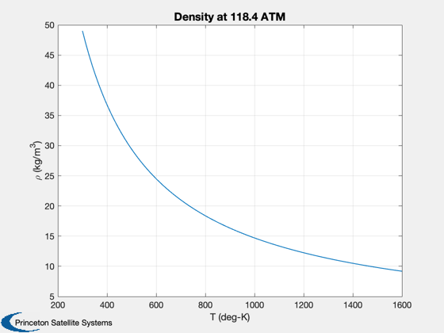
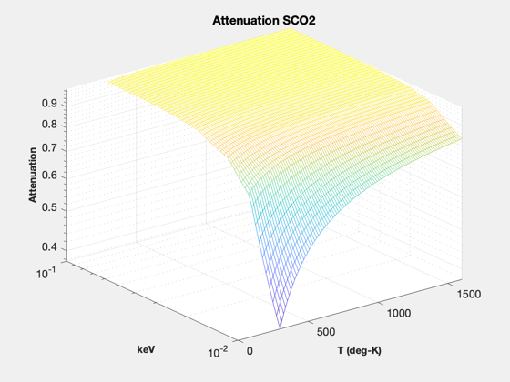

X-ray absorption for supercritial CO2
------------------------------------------------------------------------
See also: RFromCPAndGamma, XRayMassAttenCoeff
------------------------------------------------------------------------
t = linspace(300,1600);
cP = 5000;
thick = 0.04;
gamma = 1.195;
r = RFromCPAndGamma( cP, gamma );
p = 12e6;
rho = (p./(r*t));
m = 2*16+12;
el = {'carbon',12/m,'oxygen',32/m};
e = logspace(1,2);
m = XRayMassAttenCoeff( el, e/1e3 );
x = rho*thick;
m = exp(-m'*x);
s = sprintf('Density at %4.1f ATM',p/101325);
Plot2D(t,rho,'T (deg-K)','\rho (kg/m^3)',s)
NewFig('Attenuation')
mesh(t,e/1e3,m)
grid on
rotate3d on
XLabelS('T (deg-K)');
YLabelS('keV');
ZLabelS('Attenuation')
set(gca,'yscale','log');
set(gca,'zscale','log');
title('Attenuation SCO2')
if 0
PrintFig(1,4,2,'AttenuationCO2');
end
 